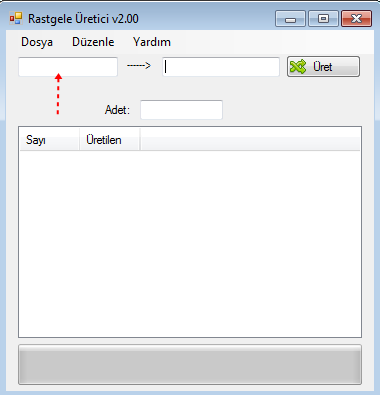

Rastgele Üretici Ýle Rastgele Bir Þeyler Üretme:
Ý: Rastgele harf, sayý ya da özel karakter
H: Rastgele harf
S: Rastgele sayý
K: Rastgele özel karakter
Yukarýda belirtilen karakterlere göre rastgele üretme iþlemi yapýlýr.
Örneðin programa SSSS-HHHH
þeklinde yazarsak;
Program örnek olarak þu ifadeye benzer bir çýktý çýkartacaktýr:
3793-CÇkÐ
Rastgele Üretici Ýle Rastgele Üretilmiþ Ýfadeleri Kodlara Çevirme:
Rastgele üretilmiþ ifadeleri SS, HH gibi kodlara çevirmek þu þekildedir.

Ýlk olarak üretilmiþ ifadeyi yukarýda belirtilen bölgeye yapýþtýralým.
Daha sonra -----> etiketine týklayalým.
Sað taraftaki metin kutusunda üretildiðini göreceksiniz.